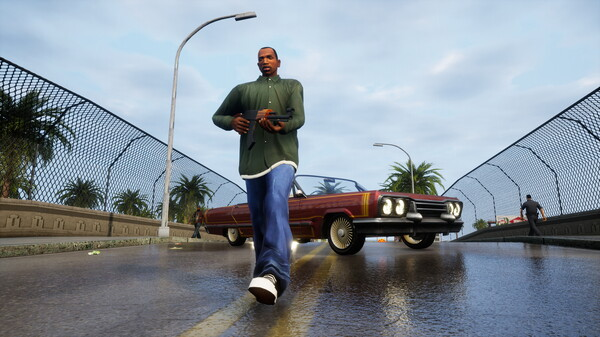
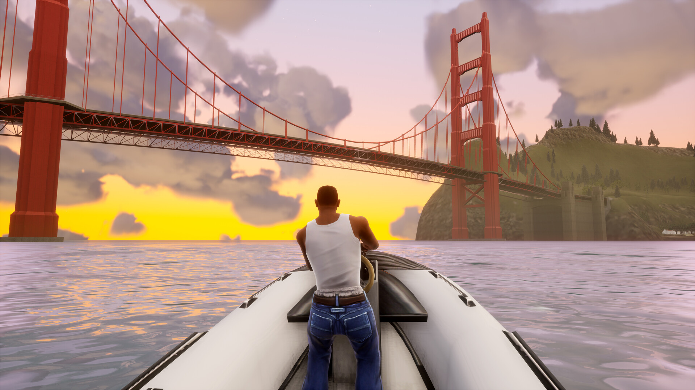

Grand Theft Auto San Andreas
Sistema operacional: Windows 10
Processador: Intel Core i5 6600K / AMD FX 6300
RAM 8GB
Placa de vídeo: Nvidia GeForce GTX 760 with 2GB VRAM or AMD Radeon R9 280 with 3GB VRAM
Espaço em disco rígido: 19 GB.
Historia
Os eventos de San Andreas acontecem em 1992 no estado fictício de San Andreas, nos Estados Unidos com base no retrato do início dos anos 1990 dos estados da Califórnia e Nevada que consiste em três cidades principais: Los Santos (baseada em Los Angeles), San Fierro (com base em São Francisco) e Las Venturas (baseada em Las Vegas). Várias regiões de floresta, deserto e pequenas cidades rurais estão espalhadas entre as grandes cidades. Los Santos é circundada pela região rural de Red County, enquanto que San Fierro tem seu arredores compostos pela região florestal e montanhosa de Flint County e Whetstone. Las Venturas faz fronteira com a região desértica de Bone County que fica localizada a zona restrita Area 69 (inspirada na base militar Área 51 da Força Aérea dos Estados Unidos, em Nevada) que faz divisa com o condado de Tierra Robada. Liberty City, a cidade apresentada em Grand Theft Auto III que é baseada levemente na cidade de Nova Iorque, também faz uma pequena aparição no jogo.
O mundo de San Andreas faz parte do cânone "Universo 3D" da série Grand Theft Auto, embora, ao contrário de seus antecessores que estão definidos nesta continuidade, o jogo incorpore versões fictícias de marcos e ambientes da vida real das cidades e estados dos Estados Unidos. Seu mapa permaneceu por quase uma década como o maior da série, até ser superado pela representação de Los Santos de Grand Theft Auto V.
Depois de viver por cinco anos em Liberty City, Carl "CJ" Johnson retorna a Los Santos em 1992 para o enterro de sua mãe, assassinada em um tiroteio. No caminho entre o aeroporto e o bairro, CJ é parado pela guarnição de Frank Tenpenny e Eddie Pulaski, que plantam uma evidência usada no assassinato de um outro policial, a fim de chantageá-lo para alguns trabalhos no futuro. Após ser liberado, encontra tanto sua família quanto sua antiga gangue, a Grove Street Families, em frangalhos. Ao mesmo tempo que começa a acertar questões antigas com seus companheiros de gangue, e luta contra a influência de gangues rivais negociantes de crack, Carl começa a trazer a Grove Street Families de volta ao topo. CJ também conhece o namorado de sua irmã Kendl, Cesar Vialpando, líder da gangue Varrios Los Aztecas, com quem consegue firmar uma aliança. No entanto, às vésperas da Grove conseguir o controle total de Los Santos, Cesar informa que os dois melhores amigos de CJ, Big Smoke e Ryder, estão trabalhando em conjunto com Tenpenny e os Ballas. Sweet, é gravemente ferido no confronto com os Ballas; CJ chega para salvá-lo, mas ambos são presos após a chegada da polícia.
Algum tempo depois, Carl é libertado por Tenpenny numa área rural longe de Los Santos, e informado de que o irmão está preso aguardando julgamento. Ao perceber que Tenpenny é sua única esperança de ficar fora da cadeia e conseguir ajudar Sweet, Carl se vê obrigado a cumprir as ordens do policial, que incluem matar pessoas envolvidas num processo criminal contra a equipe de Tenpenny. Após isso, Carl rapidamente conquista a amizade de novos aliados, entre eles Wu Zi Mu/"Woozie" e "The Truth". Através de Cesar, CJ conhece Catalina, que aceita a ajuda de Carl em alguns roubos pela região. Após vencer Catalina em uma corrida, Carl ganha a escritura de uma oficina em San Fierro. Ao chegar, CJ descobre que o local estava abandonado. The Truth ajuda-o a conseguir uns mecânicos para torná-la operante novamente, enquanto Kendl cuida da gerência. Com a ajuda de Woozie, CJ se aproxima da organização Loco Syndicate, comandada pelo trio Jizzy B, T-Bone Mendez e Mike Toreno. Após obter a confiança do grupo, CJ destrói a fábrica de drogas e mata os cabeças da organização, incluindo Ryder.
Carl posteriormente, descobre que Toreno sobreviveu ao ataque. Toreno trabalha para uma agência secreta do governo americano, e propõe que CJ faça alguns trabalhos clandestinos em troca da liberdade de Sweet. Em Las Venturas, Carl ajuda Woozie a erguer um novo cassino, mas o empreendimento é ameaçado pela máfia. Com a ajuda dos músicos Kent Paul, Maccer, e do ex-advogado Ken Rosenberg, CJ se infiltra no cassino da máfia e articula um plano de roubo. Após fazer um último serviço para Tenpenny e Pulaski, CJ é obrigado a cavar duas covas no deserto: uma para si, e outra para Hernández, um recruta da polícia que estava delatando seus crimes para a corregedoria. Carl se desvencilha da situação e mata Pulaski, mas Tenpenny escapa. Após salvar o rapper Madd Dogg de cometer suicídio, este pede que CJ seja seu empresário. Carl encontra riqueza e retorna a Los Santos para ajudá-lo. Em seguida, Toreno cumpre sua promessa e liberta Sweet, mas para a surpresa do irmão, este se recusa a fazer parte do novo estilo de vida milionário de CJ. Ao invés de aceitar a vida fácil de Carl, Sweet insiste em honrar suas raízes, retornando ao gueto e ajudando as Grove Street Families a renascerem.
Tenpenny vai a julgamento pelos seus crimes, porém as acusações são arquivadas por falta de provas, já que todas as testemunhas estão desaparecidas ou mortas. A libertação de Tenpenny provoca um tumulto entre os cidadãos de Los Santos; impulsionado pela determinação de Sweet em derrubar o império de Big Smoke, que se tornou o maior traficante da cidade, Carl reconquista o território da gangue. Após localizar o esconderijo de Big Smoke, Carl invade o local e elimina todos no caminho. Antes de morrer, Smoke confessa que se vendeu pelas promessas de dinheiro e poder feitas por Tenpenny, que aparece para levar sua parte da fortuna e fugir da cidade. Na fuga, Tenpenny rouba um caminhão de bombeiros, mas Sweet se agarra na traseira. CJ parte para resgatá-lo; após uma perseguição pelas ruas de Los Santos, Tenpenny perde controle do veículo e cai de uma ponte. Carl, prestes a executá-lo, é impedido por seu irmão, que escolhe deixar Tenpenny "morrer num acidente de carro". Com a morte de Tenpenny, os tumultos cessam. Após uma confraternização entre a família e os aliados, Carl se afasta do grupo para checar como andam as coisas na vizinhança.
Jogabilidade
Grand Theft Auto: San Andreas é um jogo eletrônico de ação-aventura com elementos de RPG e stealth. Estruturado de forma semelhante aos dois jogos anteriores da série, a jogabilidade central consiste em elementos de jogos de corrida e tiro em terceira pessoa, proporcionando ao jogador um grande ambiente de mundo aberto para se locomover. A pé, o protagonista Carl "CJ" Johnson é capaz de andar, correr, nadar, escalar e pular, além de usar armas e várias formas de combate corpo a corpo. O jogador pode controlar uma variedade de veículos, incluindo automóveis, ônibus, caminhões, barcos, aviões, helicópteros, aeronaves, trens, tanques de guerra, motocicletas, bicicletas e karts. A maioria dos veículos terrestres do jogo pode ser modificada e atualizada em várias oficinas. O jogador também pode importar veículos, além de roubá-los. Enquanto os jogos anteriores da franquia Grand Theft Auto tinham apenas algumas aeronaves de difícil acesso e voo, San Andreas tem onze tipos diferentes de aeronaves de asa fixa e nove helicópteros, além de torná-los mais integrais nas missões do jogo. Também existe a capacidade de pular de paraquedas de aeronaves ou do topo de certos arranha-céus.
O ambiente aberto e não linear de San Andreas permite que o jogador explore e escolha como deseja jogá-lo. Embora as missões do enredo sejam necessárias para progredir no jogo e desbloquear certas cidades e conteúdo, o jogador pode completá-las quando quiser. Quando não está em uma missão, o jogador pode vagar livremente pelas cidades e áreas rurais de San Andreas, comer em restaurantes ou causar conflitos, atacando pessoas e causando destruição. Criar conflitos pode atrair atenção indesejada e potencialmente fatal das autoridades. Quanto mais caos for causado, mais forte será a resposta: a polícia tratará de infrações "menores" (atacar pedestres, apontar armas para pessoas, roubar veículos, homicídio culposo, etc.), enquanto as equipes da SWAT, o FBI e os militares do exército respondem a níveis mais altos de procurado, que são definidos por estrelas. Devido ao tamanho do mapa de San Andreas, um ponto de marcação no mapa pode ser definido, ajudando o jogador a chegar a um destino.
O jogador pode participar de uma variedade de missões secundárias opcionais que podem aumentar os atributos de seu personagem ou fornecer outras fontes de renda. As missões secundárias tradicionais dos jogos anteriores estão incluídas, como virar um taxista, apagar incêndios, levar feridos ao hospital e combater o crime como vigilante. Novas adições incluem missões de roubo, missões de proxenetismo, missões de condução de caminhões e trens exigindo que o jogador faça entregas a tempo, bem como as escolas de direção, aviação e aquática, que ajudam o jogador a aprender habilidades e técnicas a fim de usarem em seus veículos correspondentes. Nem todos os locais estão abertos ao jogador no início do jogo. Algumas localizações, como garagens, restaurantes, academias e lojas, tornam-se disponíveis somente após completar missões específicas. Da mesma forma, para a primeira parte do jogo, apenas Los Santos e seus subúrbios estão disponíveis para exploração; desbloquear as outras cidades San Fierro e Las Venturas e áreas rurais novamente requer a conclusão de missões específicas. Se o jogador viajar para locais bloqueados no início do jogo, eles atrairão a atenção das equipes da SWAT, da polícia e das Hydras controladas pela polícia se estiverem em uma aeronave.
Ao contrário de Grand Theft Auto III e Vice City, que precisavam de telas de carregamento quando o jogador se movia entre diferentes ilhas no mapa, San Andreas não tem telas de carregamento quando o jogador está em trânsito; as únicas telas de carregamento no jogo são para cutscenes e no adentramento de interiores. Outras diferenças entre San Andreas e seus antecessores incluem a troca de missões de matança de um jogador para um modo multijogador local embora não esteja disponível na versão para Windows e a substituição dos "pacotes ocultos" por pichações, fotografias, ferraduras e ostras, que podem ser feitas ou coletadas pelo jogador para desbloquear atributos especiais. A câmera, o sistema de luta e os controles da mira foram retrabalhados para incorporar conceitos de outro jogo da Rockstar, Manhunt, incluindo vários elementos de stealth, bem como alvo da mira aprimorada e um indicador de saúde do alvo que muda de verde para vermelho na medida que a saúde do alvo diminui. A versão para Windows do jogo implementa sensibilidade ao mouse: o jogador tem que segurar o botão direito do mouse para ativar a mira e então clicar ou segurar o botão esquerdo do mouse para atirar ou usar um item, como uma câmera.
Pela primeira vez na série, os jogadores podem nadar e escalar paredes. A capacidade de nadar e mergulhar debaixo d'água também tem um grande efeito no jogador, já que a água não é mais uma barreira intransponível que mata o jogador imediatamente (embora seja possível se afogar). Para maior poder de fogo, o jogador também pode empunhar duas armas de fogo ou disparar de um lado para o outro com vários membros de gangue que podem ser recrutados para seguirem o jogador. A personalização do personagem principal é bastante enfatizada em San Andreas. Roupas, acessórios, cortes de cabelo, joias e tatuagens estão disponíveis para compra pelo jogador e têm mais efeito nas reações dos personagens não-jogadores (NPCs) do que as roupas em Vice City. Carl também pode ter namoradas com quem ele pode sair e se divertir. O nível de respeito de CJ entre seus colegas recrutas e amigos de rua varia de acordo com sua aparência e ações, assim como seu relacionamento com suas namoradas. O jogador deve garantir que CJ se alimente para se manter saudável e se exercite de forma adequada. O equilíbrio entre alimentação e atividade física afeta sua aparência e atributos físicos. O jogo também monitora as habilidades adquiridas em áreas como direção, manuseio de armas de fogo, resistência e capacidade pulmonar, que melhoram à medida que o jogador os usufrua. CJ pode aprender três estilos diferentes de combate corpo a corpo boxe, kickboxing e kung fu nas academias de cada uma das três cidades do jogo. CJ também pode falar com alguns pedestres, respondendo de forma negativa ou positiva.
Um novo recurso adicionado ao jogo é a guerra de gangues. As batalhas com gangues inimigas ocorrem sempre que o jogador se aventura em território inimigo e mata pelo menos três membros da gangue. Se o jogador sobreviver a três ondas de inimigos, o território será conquistado e outros membros da gangue começarão a vagar pelas ruas dessas áreas. Quanto mais território pertencer ao jogador, mais dinheiro será gerado. Ocasionalmente, o território do jogador ficará sob ataque de gangues inimigas e será necessário derrotá-los para reter essas áreas. Caso o jogador conquiste todos os territórios, nenhum deles poderão ser atacados. Vários minijogos estão disponíveis em San Andreas, incluindo basquetebol, bilhar, jogos de ritmo (dança e "saltar" em lowriders suspendidos), pôquer e máquinas de jogo eletrônico que homenageiam os clássicos jogos de arcade. Além disso, existem os jogos de casino e apostas em corridas de cavalos virtuais.